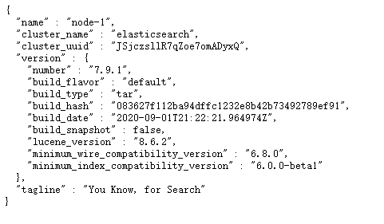
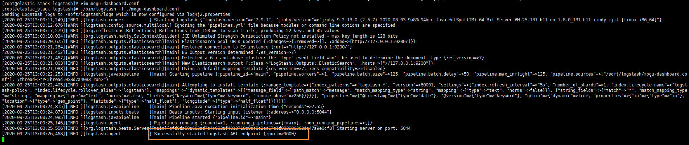
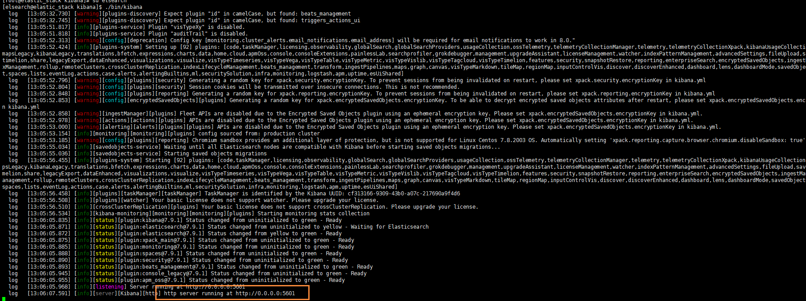
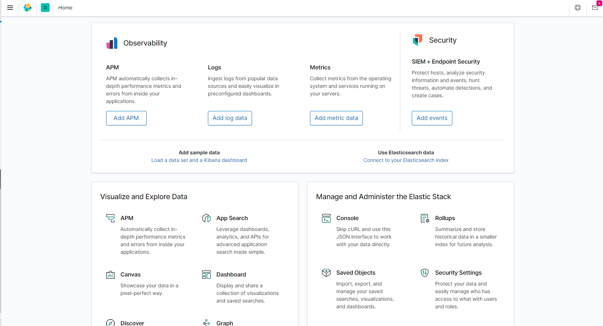

使用ELK搭建蘑菇博客日志收集
前言
前阵子学习了ElasticStack的技术栈，其中包括ElasticSearch 、Beats、Kibana、Logstash。因为打算将其用于蘑菇博客的项目中，关于ElasticStack的技术栈学习，可以参考前面写的博客~
拉取ElasticStack镜像
通过本教程，可以非常方便的给蘑菇博客项目，集成ELK用于分布式日志收集
为了更加方便的部署ELK环境，我已经提前将环境打包成了Docker镜像，发布到了DockerHub中，所以我们只需要拉取我提前制作的ElasticStack镜像即可
# 拉取镜像
docker pull moxi/elastic_stack
# 查看镜像
docker images;
拉取完成后，查看我们的镜像信息，容量大概在4.16G左右

制作容器
在我们拉取完成后，就可以开始通过镜像制作我们的ElasticStack容器了
docker run --privileged -d -it -h elastic_stack --name elastic_stack -v /etc/localtime:/etc/localtime:ro -p 11122:22 -p 9200:9200 -p 5601:5601 -p 5044:5044 -p 9600:9600 moxi/elastic_stack /usr/sbin/init
其中这里主要使用的端口号有
- 11122：用于建立ssh连接内部容器
- 9200：ElasticSearch默认端口号
- 5601：Kibana默认端口号
- 5044：Logstash默认端口号
执行完上面的命令后，如果没有错误，那么就代表执行成功

然后我们就可以通过在启动一个xshell窗口，连接我们的容器了

输入你服务器的ip地址，以及端口号为 11122，然后点击确定，然后在输入服务器的账号和密码
- 账号：root
- 密码：mogu2018
即可进入到我们的容器内部，我们到/soft目录下，能看到里面安装的软件
- ElasticSearch：分布式搜索引擎
- jdk：java1.8
- kibana：图形化工具
- logstash：用于数据的过滤和处理
启动ElasticSearch
因为ElasticSearch的启动配置要求比较高，所以我们需要修改一些配置，首先我们到宿主机【是刚刚安装Docker的机器，不是现在容器里面！！】
# 到宿主机上打开文件
vim /etc/sysctl.conf
# 增加这样一条配置，一个进程在VMAs(虚拟内存区域)创建内存映射最大数量
vm.max_map_count=655360
# 让配置生效
sysctl -p
然后再去启动ElasticSearch，因为ElasticSearch不能使用root用户直接启动，所以我们需要切换到elsearch
# 切换用户
su elsearch
# 进入到ElasticSearch目录
cd elsearch
# 启动
./bin/elasticsearch
# 后台启动
./bin/elasticsearch -d
启动完成后，我们就可以看到ElasticSearch运行在9200端口上

我们输入下面的地址到浏览器中访问
http://your_ip:9200/
如果出现下面的内容，表示ElasticSearch服务已经正常启动~

启动Logstash
Logstash的作用就是收集Beats发送过来的数据，然后进行处理，处理完成后，在将其推送到ElasticSearch中，如果需要查看更多的关于Logstash，可以跳转到上面提到的博客中
我们首先到Logstash目录
cd /soft/logstash
然后我们可以查看配置文件
vim mogu-dashboard.conf
可以看到我之前配置的信息
input {
beats {
port => "5044"
}
}
filter {
mutate {
split => {"message"=>"|"}
}
mutate {
add_field => {
"userId" => "%{[message][1]}"
"visit" => "%{[message][2]}"
"date" => "%{[message][3]}"
}
}
mutate {
convert => {
"userId" => "integer"
"visit" => "string"
"date" => "string"
}
}
mutate {
remove_field => [ "host" ]
}
}
#output {
# stdout { codec => rubydebug }
#}
output {
if [from] == 'mogu_web' {
elasticsearch {
hosts => ["127.0.0.1:9200"]
index => "logstash_mogu_web_%{+YYYY.MM.dd}"
}
}
if [from] == "mogu_admin" {
elasticsearch {
hosts => ["127.0.0.1:9200"]
index => "logstash_mogu_admin_%{+YYYY.MM.dd}"
}
}
if [from] == "mogu_sms" {
elasticsearch {
hosts => ["127.0.0.1:9200"]
index => "logstash_mogu_sms_%{+YYYY.MM.dd}"
}
}
if [from] == "mogu_picture" {
elasticsearch {
hosts => ["127.0.0.1:9200"]
index => "logstash_mogu_picture_%{+YYYY.MM.dd}"
}
}
if [from] == "mogu_nginx" {
elasticsearch {
hosts => ["127.0.0.1:9200"]
index => "logstash_mogu_nginx_%{+YYYY.MM.dd}"
}
}
}
我们可以通过获取到传递过来的from字段，就是在filebeat时候指定的 一个字段，代表是这条日志属于哪个模块的，然后在根据logstash的if判断，然后生成不同的ElasticSearch索引

下面，我们指定该配置文件后，然后启动项目
# 前台启动
./bin/logstash -f ./mogu-dashboard.conf
# 后台启动
nohup ./bin/logstash -f ./mogu-dashboard.conf > catalina.out 2>&1 &
注意：logstash的启动可能会比较慢，需要耐心的等待一会~

启动完成后，会占用9600端口~，同时经过logstash的数据都会发送到ElasticSearch中
启动Beats
启动filebeat
filebeat是一个轻量级的日志文件收集器，主要用于收集我们的一些日志文件【它和应用服务器存放在一起】
需要注意，Beats不在我们ELK服务器上进行启动了，我们需要到部署蘑菇博客的服务器上，然后找到Beats目录
我们首先需要到我们应用服务器中，然后启动filebeats 【如果你的目录下没有，可以参考 Beats入门简介 安装】
# 进入到filebeat目录
cd /soft/beats/filebeat
然后查看我们的配置文件
vim mogu-dashboard.yml
然后修改我们配置文件中logstash的地址，我们要把它改成刚刚部署的logstash服务器的ip即可
filebeat.inputs:
- type: log
enabled: true
paths:
- /home/mogu_blog/mogu_web/catalina.out
fields:
from: mogu_web
fields_under_root: true
- type: log
enabled: true
paths:
- /home/mogu_blog/mogu_admin/catalina.out
fields:
from: mogu_admin
fields_under_root: true
- type: log
enabled: true
paths:
- /home/mogu_blog/mogu_sms/catalina.out
fields:
from: mogu_sms
fields_under_root: true
- type: log
enabled: true
paths:
- /home/mogu_blog/mogu_picture/catalina.out
fields:
from: mogu_picture
fields_under_root: true
setup.template.settings:
index.number_of_shards: 1
output.logstash:
hosts: ["101.132.122.175:5044"]
然后启动我们的filebeat
# 前台启动
./filebeat -e -c mogu-dashboard.yml
# 后台启动
#!/bin/bash
nohup ./filebeat -e -c mogu-dashboard.yml > catalina.out 2>&1 &
启动完成后，我们能够看到日志文件已经被加载

启动Kibana
Kibana的作用就是对我们的数据进行图形化的显示，首先我们到Kibana目录 【回到ELK目录下】
# 到kibana安装目录
cd /soft/kibana
因为Kibana和ElasticSearch一样，不支持root用户启动，所以我们继续切换成elsearch用户
su elsearch
然后启动
./bin/kibana
查看启动信息，我们发现Kibana启动在5601端口号

启动后，我们在浏览器中访问我们的地址
http://your_ip:5601

我们找到dashboard就可以看到蘑菇博客的日志记录了

tip：这里就只介绍了ElasticStack的日志收集，关于更多的Kibana图形化页面，小伙伴可以参考其它文件进行配置，这里就不列举出来啦~